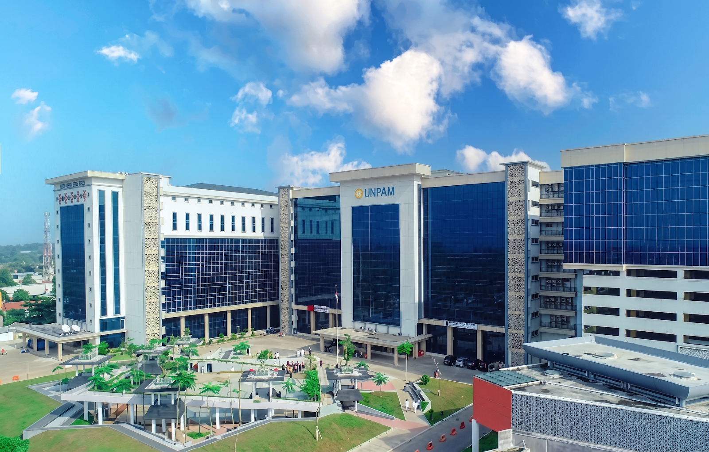
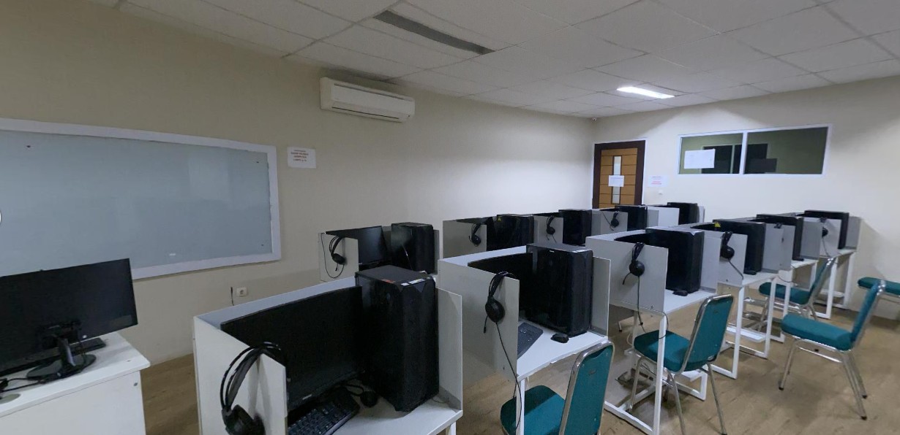
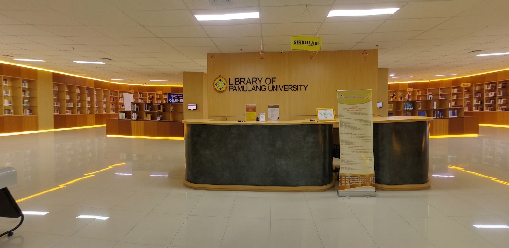

Jumlah Record
0Record
Total data inventaris tersimpan
Dari penyimpanan lokal peramban
Admin Sarpras
Universitas Pamulang - Viktor
Kampus Viktor • Jl. Raya Puspitek No. 46, Buaran, Serpong
Monitoring inventaris fisik, ruang akademik, serta kesiapan fasilitas perkuliahan Universitas Pamulang.
0Record
Total data inventaris tersimpan
Dari penyimpanan lokal peramban
0Unit
Jumlah seluruh barang
Akumulasi kolom jumlah
0Unit
Siap pakai perkuliahan
Total kuantitas kondisi baik
0Unit
Perlu perhatian
Total kuantitas di luar kondisi baik
Sebaran kategori aset pada zona akademik kampus Viktor.
Ruang Kelas
540 item (43,3%)
Kursi mahasiswa, meja dosen, Projector Epson, AC Split, dan whiteboard magnetik.
Laboratorium
430 item (34,5%)
Desktop PC Core i7, monitor LED, Cisco Router & Switch, dan meja lab komputer.
Perpustakaan
278 item (22,3%)
Rak buku baja ganda, meja baca partisi, PC OPAC katalog, dan printer laser.
Persentase dibulatkan ke satu angka desimal.
Kapasitas fasilitas terpakai 88,4% dari total alokasi inventaris aktif.
UNPAM-VK-2025Distribusi total kuantitas barang berdasarkan kondisi.
Grafik kondisi tidak dapat dimuat.
Contoh inventaris yang membutuhkan tindak lanjut.
| Inventaris | Lokasi | Kondisi | Tindak Lanjut |
|---|---|---|---|
| Projector Epson | Ruang A103 | Rusak Ringan | Jadwalkan pemeriksaan |
| PC Lenovo 04 | Lab Komputer | Rusak Berat | Evaluasi perbaikan |
| AC Panasonic | Lab Jaringan | Dalam Perbaikan | Pantau progres servis |
Data simulasi untuk tampilan awal. Pengelolaan inventaris dikembangkan pada tahap interaktivitas.
Contoh riwayat kegiatan pengelolaan sarana.
Inventaris baru ditambahkan
Kursi kuliah dicatat untuk Ruang A101.
Kondisi barang diperbarui
Projector Epson di Ruang A103 berstatus Rusak Ringan.
Pemeliharaan diajukan
Pengajuan servis AC Lab Jaringan dicatat.
Pemeliharaan selesai
Penggantian keyboard komputer laboratorium selesai.
Buku baru ditambahkan
Koleksi buku kategori Informatika diperbarui.
Sistem Informasi Manajemen Sarana & Prasarana — Universitas Pamulang (UNPAM Kampus Viktor). Jadwal Audit Fisik Triwulan II: 14 hari lagi pada skenario simulasi.
Dokumentasi fisik sarana pendukung perkuliahan Kampus Viktor Pamulang.


